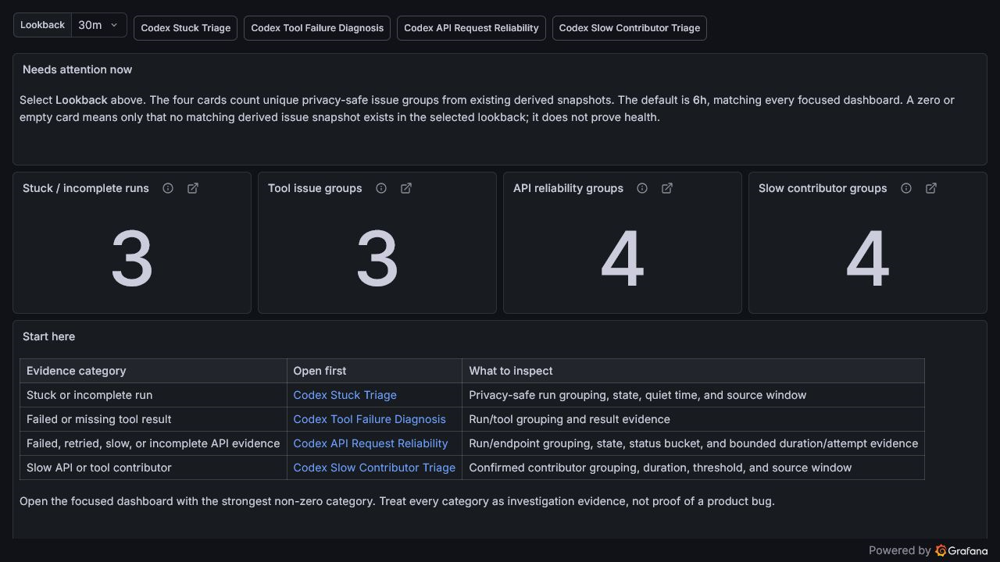
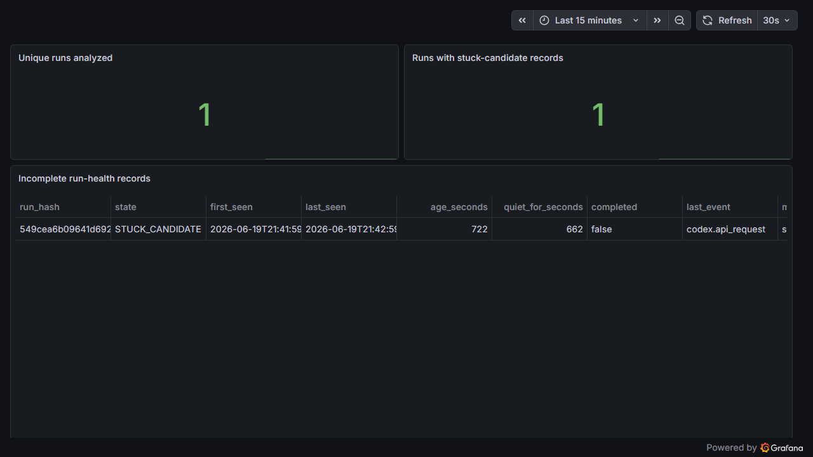
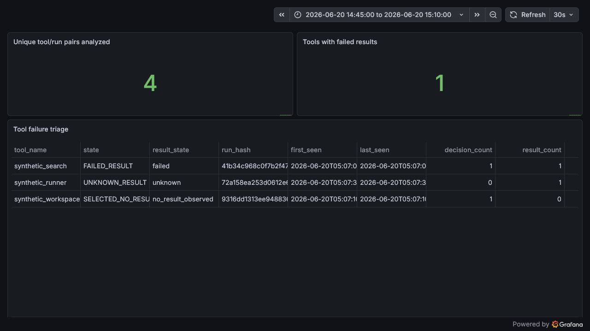
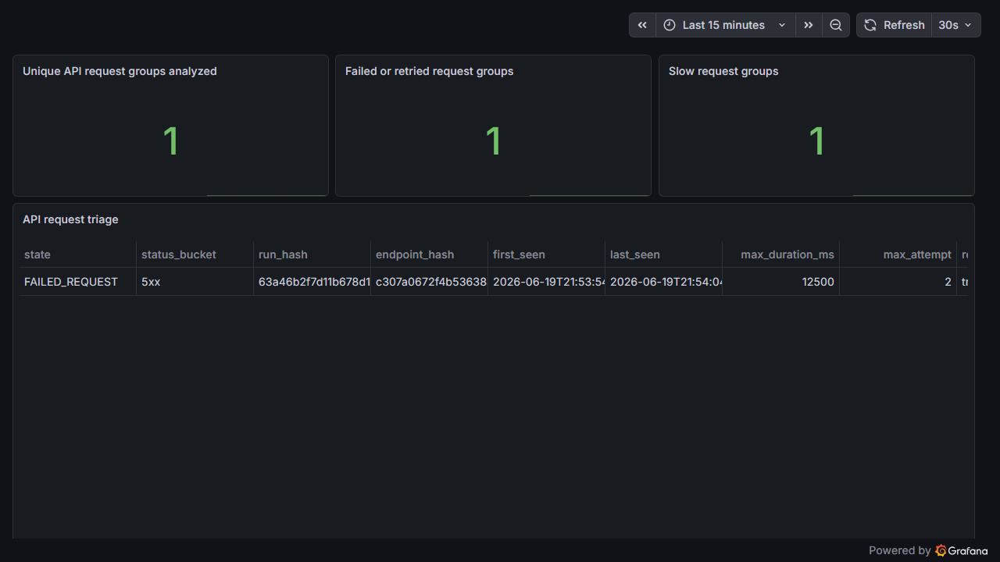

Local-first OpenTelemetry and Grafana observability for Codex diagnostics. The focused kit turns schema-confirmed telemetry into privacy-safe derived evidence, then surfaces the relevant issue class in Grafana.
Schema-confirmed fieldsDerived evidence onlyNo raw prompts
Investigation evidence, not proof of a Codex bug. Silence does not prove health.
Why use it
Move from “something feels off” to a bounded investigation.
The kit is useful precisely because it refuses to make the leap from evidence to certainty.
01
Stop guessing
See whether recent evidence points toward a quiet run, tool result, API request group, or slow confirmed contributor.
02
Keep private work private
Group with hashes and allowlisted fields rather than exposing prompts, identities, paths, arguments, or output.
03
Open the focused view
Use the Command Center first, then follow the linked dashboard into the relevant privacy-safe grouping and source window.
04
Keep claims bounded
Every diagnostic says what its telemetry can support—and what remains unknown, aggregated, or unproven.
Diagnostic map
From developer pain to the next useful view.
Focused dashboards provide detail. The Command Center only surfaces categories and routes.
What you feelDerived streamOpen this viewInvestigate next
Codex goes quietcodex.run_healthCodex Stuck TriageRun state, quiet time, last event, source window
Tool failed or returned nothingcodex.tool_diagnosticTool Failure DiagnosisRun/tool aggregate and result evidence
API request failed, retried, or ran slowcodex.api_diagnosticAPI Request ReliabilityRun/endpoint aggregate, status bucket, timing
Codex feels slowcodex.slow_contributorSlow Contributor TriageConfirmed API/tool contributor and threshold
I do not know where to startderived category summaryDiagnostic Command CenterChoose a non-green category, then open its focused view
Precision boundary: run/tool and run/endpoint evidence is aggregate-level—not individual-call or individual-request proof.
Interactive dashboard walkthrough
Pick the problem you are trying to understand.
Each expandable path uses a real shipped Grafana dashboard with recent synthetic example data. Open a path to see what to inspect, what the evidence suggests, and what to do next.
Real dashboards, bounded claims.The screenshots below are local captures from the shipped dashboards. Their values came from focused synthetic proof triggers through OTLP, Loki, the shipped analyzers, and Grafana. They explain investigation—not automatic diagnosis or resolution.
01I do not know where to startDerived category summaryDiagnostic Command CenterExplore
Synthetic example data

What to notice: four equal category cards and the Start here map. A non-zero card is a route into a focused investigation, not a priority score.
OPEN Codex Diagnostic Command Center
Symptom
Codex feels wrong, but the likely issue class is unclear.
Inspect
The shared lookback, non-green category cards, and the Start here mapping to focused dashboards.
This evidence suggests
One or more derived issue categories have recent records worth investigating.
Next action
Open the linked focused dashboard, then inspect its privacy-safe grouping and source window.
Important limitation
The Command Center surfaces and routes. It does not rank competing issues, classify raw telemetry, or prove health when every card is empty.
02Codex goes quiet or appears stuckcodex.run_healthCodex Stuck TriageExplore
Synthetic example data

What to notice: unique-run stats avoid snapshot inflation, while the table preserves the state, quiet period, last safe event type, and bounded source window.
OPEN Codex Stuck Triage
Symptom
Codex appears quiet, incomplete, or no longer making visible progress.
Inspect
run_hash, state, quiet_for_seconds, last event, and source window.
This evidence suggests
The run may be a stuck candidate, slow but alive, or incomplete with insufficient evidence.
Next action
Compare state and quiet period, then investigate surrounding tool, API, and environment evidence for the same time window.
Important limitation
A stuck candidate is heuristic investigation evidence, not proof of a Codex bug. Repeated snapshot rows do not represent additional runs.
03A selected tool failed or produced no resultcodex.tool_diagnosticTool Failure DiagnosisExplore
Synthetic example data

What to notice: the failure is grouped by privacy-safe run hash and schema-backed tool name. Decision and result counts describe the aggregate, not one call.
OPEN Codex Tool Failure Diagnosis
Symptom
A tool was selected, failed, stalled, or produced no useful result.
Inspect
tool_name, derived state, result state, decision/result counts, run hash, and source window.
This evidence suggests
A run/tool aggregate contains failed, missing, successful, or incomplete result evidence.
Next action
Check MCP/server setup, tool availability, permissions, and local command or runtime assumptions; then inspect surrounding raw telemetry safely.
Important limitation
Raw call IDs are deliberately excluded. This is tool/run-level evidence, not proof about one specific call.
04An API request failed, retried, or ran slowcodex.api_diagnosticAPI Request ReliabilityExplore
Synthetic example data

What to notice: status bucket, bounded duration, attempt evidence, and endpoint hash keep the view useful without displaying the raw endpoint.
OPEN Codex API Request Reliability
Symptom
Codex feels unreliable or fails around model/backend activity.
Inspect
State, status bucket, maximum duration, maximum attempt, retry flag, endpoint hash, run hash, and source window.
This evidence suggests
A run/endpoint group contains failed, retried, slow, successful, or incomplete request evidence.
Next action
Check local connectivity and configuration, compare status/timing with the selected window, and inspect surrounding telemetry before escalating.
Important limitation
Failure wins conservative group precedence, so a failed group may also contain successful evidence. It does not prove an individual request or Codex service bug.
What to notice: contributor type, observed duration, local threshold, and safe endpoint/tool grouping identify where confirmed time evidence accumulated.
OPEN Codex Slow Contributor Triage
Symptom
Codex feels slow between a request and a useful response.
Inspect
Contributor type, duration, configured threshold, run hash, endpoint hash or tool name, and source window.
This evidence suggests
A confirmed API request or tool result exceeded a local investigation threshold, or both contributor types were slow in one run.
Next action
Use contributor type to choose API or tool investigation, then compare duration with the local threshold and focused dashboard evidence.
Important limitation
This is contributor-level evidence. It does not measure full end-to-end Codex turn latency or prove a service bug.
1Notice the symptomQuiet, failed tool, unreliable API, slowness, or uncertainty.
2Open a starting viewCommand Center or the known focused dashboard.
3Inspect safe evidenceState, grouping, bounded timing, and source window.
4Narrow the issue classRun, tool, API, or slow contributor evidence.
5Take the next actionCheck environment, availability, permissions, connectivity, or timing context.
6Keep the boundaryEvidence guides investigation; it does not automatically resolve or prove a bug.
Evidence loop
Raw evidence in. Reduced evidence back. Grafana reads the derived side.